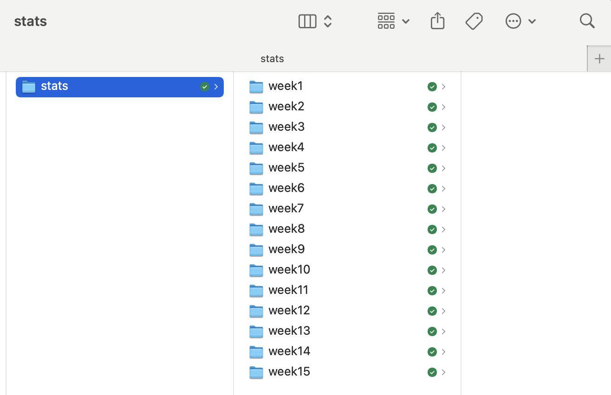
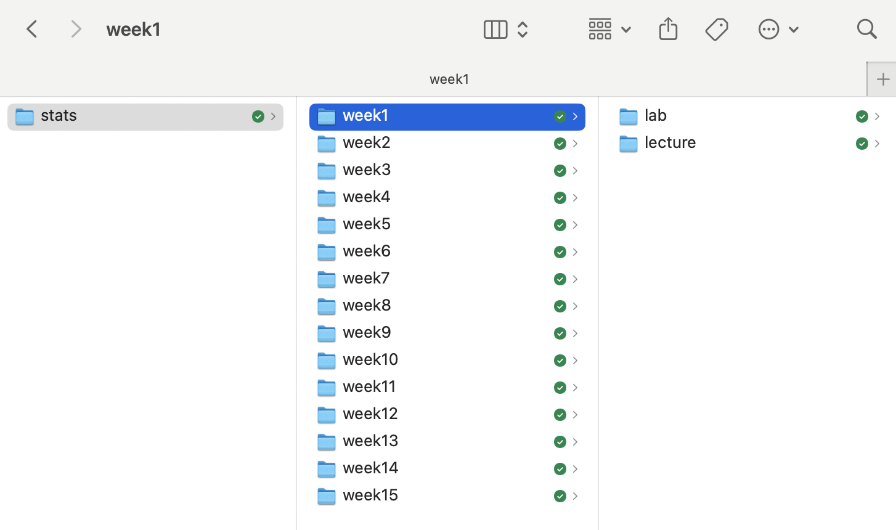
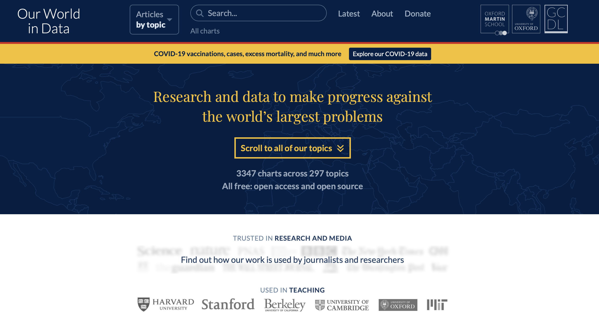
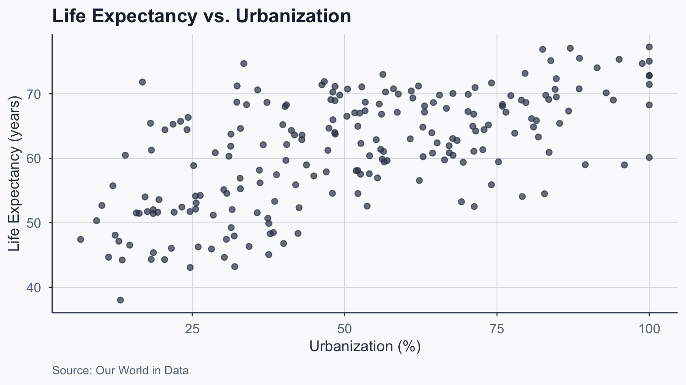
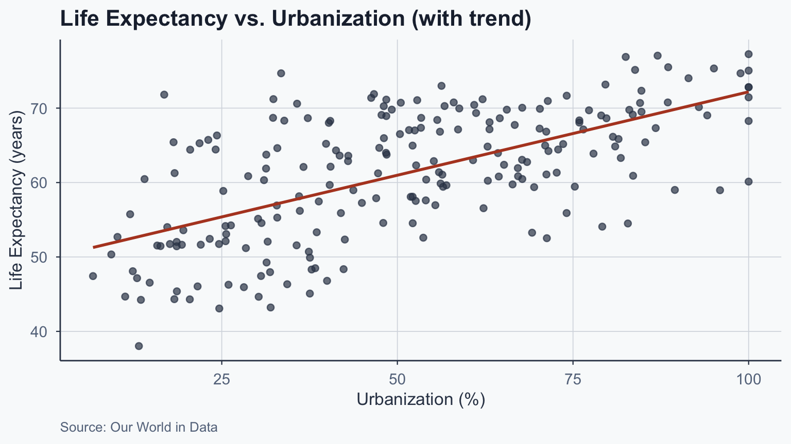
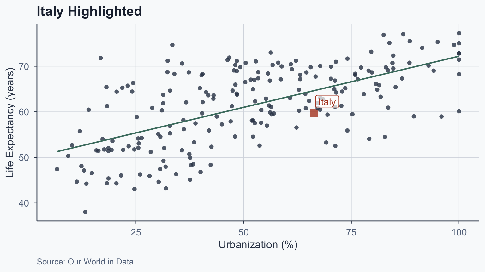
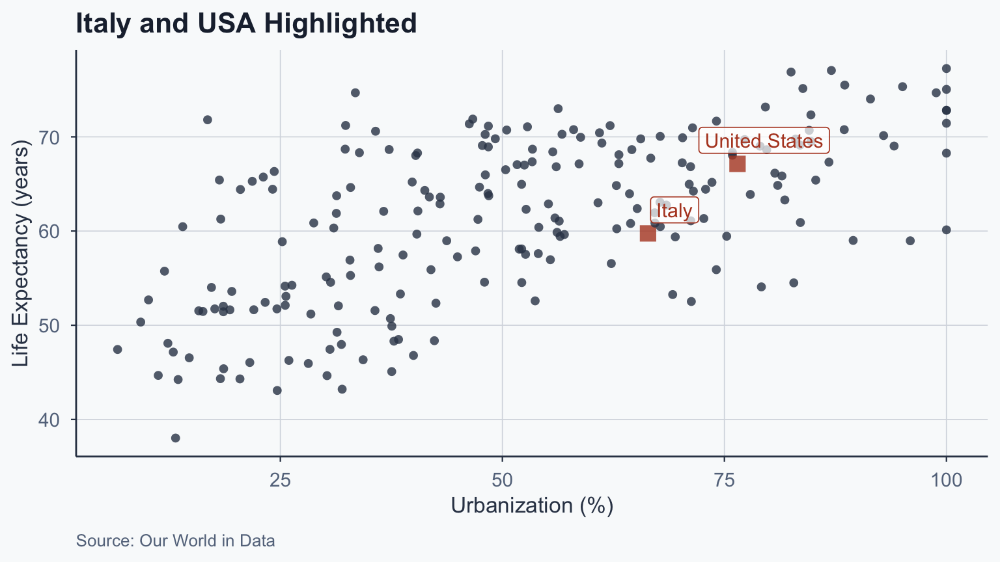
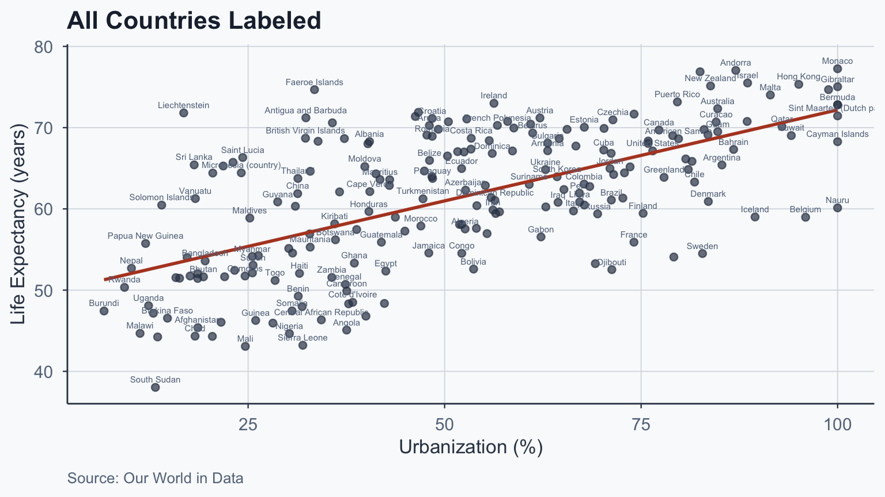

![]()
%%{init: {"theme": "base", "themeVariables": {"primaryColor": "#4a7c6f", "primaryTextColor": "#f9fafb", "primaryBorderColor": "#1e293b", "lineColor": "#334155", "fontSize": "22px"}, "flowchart": {"useMaxWidth": true, "nodeSpacing": 50, "rankSpacing": 80}, "width": 1150, "height": 650}}%%
flowchart LR
A["Adequacy of<br/>Medical Insurance<br/>(Antecedent)"] --> B["Attitudes toward<br/>Nat. Health Insurance<br/>(Independent Variable)"]
B --> C["Presidential<br/>Vote<br/>(Dependent Variable)"]
style A fill:#64748b,stroke:#1e293b,color:#f9fafb
style B fill:#4a7c6f,stroke:#1e293b,color:#f9fafb
style C fill:#b44527,stroke:#1e293b,color:#f9fafb
Statistical Analysis
Lecture 1: Overview of Statistics
Learning Outcomes and Skills
Learning Outcomes
- Use statistical terminology accurately and interpret descriptive statistics, hypothesis tests, and regressions
- Organize, clean, and merge datasets using R, and summarize data with numerical and graphical methods
- Conduct hypothesis tests (z-tests, t-tests) and estimate bivariate and multivariate regression models
- Distinguish correlation from causation using causal diagrams (DAGs) and apply causal inference methods (RCTs, matching, differences-in-differences)
- Create effective data visualizations using ggplot2 and produce reproducible reports in Quarto
Skills
- Interpret data using descriptive statistics
- Apply hypothesis testing and correlation analysis
- Create effective data visualizations
- Generate and present insights from data
Career Applications
- Data Analyst: clean, visualize, and report data
- Policy Analyst: evaluate program impact with evidence
- Market Researcher: survey design and trend analysis
- Academic Researcher: test theories with statistical models
Logistics
Course Logistics
- Hours: MW 10:00–11:15 AM
- Room: F.1.5, Frohring Campus, First Floor
- Office Hours: TBA
- Bi-weekly problem sets and two exams
- Laptops required for lab sessions
- Programming language: R
Assignment Workflow
- Work individually first, submit your version
- Check responses with team members
- Submit updated responses individually
- Final grade: average of both submissions
- Teammates grade your contribution
Sample Grades
| Student | Assignments | Midterm | Final | Peer | Grade | Letter |
|---|---|---|---|---|---|---|
| 1 | 92.2 | 92.5 | 84.0 | 100 | 90.2 | B |
| 2 | 87.1 | 85.0 | 95.5 | 100 | 89.6 | B |
| 3 | 92.8 | 97.5 | 95.0 | 100 | 95.2 | A- |
| 4 | 97.4 | 100.0 | 95.0 | 100 | 97.6 | A |
| 5 | 84.2 | 82.5 | 63.5 | 100 | 78.3 | C |
Grading Scale
| Range | Letter |
|---|---|
| 97 – 100 | A |
| 93 – 96 | A- |
| 90 – 92 | B+ |
| 87 – 89 | B |
| 83 – 86 | B- |
| 80 – 82 | C+ |
| 77 – 79 | C |
| 73 – 76 | C- |
Course Schedule
- Overview of Statistics
- Levels of Data
- Descriptive Statistics
- Probability I
- Probability II
- Z-tests & Significance
- Correlation & Review
- Midterm Exam
- Bivariate Regression
- Multivariate Regression
- RCT Data
- OLS Assumptions
- Causal Models
- Conclusion
- Final Exam
Workspace Setup
- Create a dedicated
statsfolder - Add 15 subfolders:
week1throughweek15 - Casing matters: use
week1notWeek1
Workspace: Main Folder

Workspace: Weekly Subfolders
Within each week, create lecture and lab subfolders.

Empirical Research
Why Empirical Research?
- Test theories systematically, not just describe
- Measure relationships and identify patterns
Key steps:
- Select appropriate data for analysis
- Choose an analytical method
- Apply statistical tools to test hypotheses
Research Question Examples
- Why do countries democratize?
- What are long-term effects of colonialism?
- Who votes and who doesn’t?
- How do regimes repress human rights?
- What drives support for foreign involvement?
Discussion
Pick a social outcome (e.g., voter turnout, income, health).
- What is one factor that might influence it?
- Which is the independent variable? Dependent?
- Would you expect a positive or negative relationship?
Concepts versus Variables
Variables vs Constants
- A variable is a concept with variation
- A concept without variation is a constant
- Variation is key to data analysis
Independent and Dependent Variables
- Independent variable: thought to cause variation
- Dependent variable: influenced by the independent
Example:
Independent Variable → Dependent Variable
Education → Income
Arrow Diagram: Insurance Example
Source: Author’s illustration
Arrow Diagram: Education Example
%%{init: {"theme": "base", "themeVariables": {"primaryColor": "#4a7c6f", "primaryTextColor": "#f9fafb", "primaryBorderColor": "#1e293b", "lineColor": "#334155", "fontSize": "22px"}, "flowchart": {"useMaxWidth": true, "nodeSpacing": 40, "rankSpacing": 70}, "width": 1150, "height": 650}}%%
flowchart LR
A["Formal<br/>Education<br/>(Independent)"] --> B["Sense of<br/>Civic Duty<br/>(Intervening)"]
A --> C["Knowledge of<br/>Candidates' Positions<br/>(Intervening)"]
B --> D["Voter<br/>Turnout<br/>(Dependent)"]
C --> D
style A fill:#4a7c6f,stroke:#1e293b,color:#f9fafb
style B fill:#b7943a,stroke:#1e293b,color:#1e293b
style C fill:#b7943a,stroke:#1e293b,color:#1e293b
style D fill:#b44527,stroke:#1e293b,color:#f9fafb
Source: Author’s illustration
Associations
What Are Associations?
- Two variables are associated if one predicts the other
Example: Life Expectancy and Urbanization
Life Expectancy
- Indicator of overall health and well-being
- Studied by health researchers and economists
- We examine data for 214 countries
- Does urbanization affect life expectancy?
Our World in Data

Source: ourworldindata.org
The Data

- Each row is a country (unit)
- Two variables measured per unit
- Variables vary across units
What Explains Life Expectancy?
- What explains variation in life expectancy?
- Traits of longer-lived countries?
- Traits of shorter-lived countries?
- Key correlates: income, education, urbanization
Correlates of Life Expectancy
Longer Life Expectancy
- Higher incomes and more schooling
- Better public services
- More urbanized
Shorter Life Expectancy
- Lower incomes and less schooling
- Weaker public services
- Less urbanized
Source: Author’s illustration
Scatterplot: Life Expectancy vs. Urbanization

Figure 1
With Trend Line

Figure 2
Italy Highlighted

Figure 3
Italy and USA Highlighted

Figure 4
All Countries Labeled

Figure 5
Associations vs Causal Relationships
Association and Prediction
- Associated variables help predict each other
Predictions from our data:
- Middle-income countries: longer life expectancy
- More urbanized countries: longer life expectancy
Causal Relationships
A causal relationship requires three elements:
- X and Y must covary (be associated)
- Change in X must precede change in Y
- Association not due to chance or other factors
Causal claims are formalized as hypotheses.
Hypotheses
What is a Hypothesis?
- Explicit statement about expected relationships
- Formalizes the researcher’s informed guess
- Links variables with a predicted direction
Good Hypothesis Characteristics
- Empirical: testable with observable evidence
- Grounded in theory or logic
- Specifies direction of the relationship
- Concepts consistent with measurement
- Feasible to test with available data
- Specifies the unit of analysis
Hypothesis Examples
- More education → higher income (IV, DV, +)
- Higher urbanization → longer life expectancy (+)
- More campaign spending → more votes (+)
- Higher unemployment → lower trust in government (-)
Your Turn
Write a hypothesis with:
- A clear independent variable
- A clear dependent variable
- A predicted direction (positive or negative)
Defining Concepts
Good concept definitions should be:
- Clear
- Accurate
- Precise
- Informative
Balance between specific and abstract.
Populations and Samples
- Population: full set of units of interest
- Sample: subset we actually study
- Sampling: selecting a subset from the population
- We use samples to estimate population characteristics
Sampling: Key Points
- Good samples should be representative
- First, clearly define the population
- Probability sampling: known chance of selection
- Reduces bias, enables unbiased estimation
Representative Samples
- Goal: draw conclusions about the population
- Representative sample reflects population traits
- Repeated sampling yields population-matching features
Conclusion
What We Covered
- Variables, associations, and causal claims
- Hypotheses link an IV to a DV with direction
- Association does not imply causation
Next week: Levels of data – nominal, ordinal, interval, ratio – and why measurement type determines your analysis.
Popescu (JCU) Statistical Analysis Lecture 1: Overview of Statistics